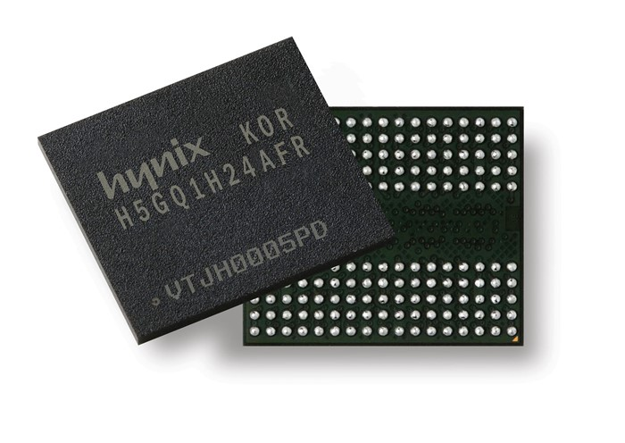

Placa de Video
Placa de vídeo, também chamada de placa gráfica ou aceleradora gráfica, é um componente de um computador que envia sinais deste para o ecrã, de forma que possam ser apresentadas imagens ao utilizador. Normalmente possui memória, com capacidade medida em Byte.
Em computadores mais baratos, as placas de vídeo estão incorporadas na placa-mãe, comumente chamadas de onboard, não possuem memória dedicada, e por isso utilizam a memória RAM
do sistema, normalmente denomina-se memória (com)partilhada. Como a
memória RAM de sistema é geralmente mais lenta do que as utilizadas
pelos fabricantes de placas de vídeo, e ainda divide o barramento com o processador e outros periféricos
para acesso à mesma, este método torna o sistema mais lento. Isso é
notado especialmente quando se usam recursos tridimensionais ou de alta
definição.
Já em computadores mais sofisticados, possui o adaptador de vídeo chamado offboard e tem uma GPU própria, a GPU
gráfica ou acelerador gráfico. Trata-se de um "processador" capaz de
gerar imagens e efeitos visuais tridimensionais, e acelerar os
bidimensionais, aliviando o trabalho do processador principal e gerando
um resultado final melhor e mais rápido. Esse processador utiliza uma
linguagem própria para descrição das imagens tridimensionais, algo como
"crie uma linha do ponto x1, y1, z1 ao ponto x2, y2, z2 e coloque o
observador em x3, y3, z3" é interpretado e executado, gerando o
resultado final, que é a imagem da linha vista pelo observador virtual. O
resultado final normalmente é medido considerando-se o número de vezes
por segundo que o computador consegue redesenhar uma cena, cuja unidade é
o FPS (quadros por segundo, frames per second).
Comparando-se o mesmo computador com e sem processador de vídeo
dedicado, os resultados (em FPS) chegam a ser dezenas de vezes maiores
quando se tem o dispositivo.
Tais processadores, em geral, estão disponíveis em equipamento a
ser adicionado ao computador (adaptadores de vídeo), embora existam
placas‐mãe e mesmo computadores portáteis que possuam esse recurso.
Também existem duas tecnologias voltadas aos usuários de softwares 3D e jogadores: SLI e CrossFire.
Essa tecnologia permite juntar mais placas de vídeo para trabalharem em
paralelo, duplicando o poder de processamento gráfico e melhorando seu
desempenho. SLI é o nome adotado pela nVidia, enquanto CrossFireX é utilizado pela ATI.
Apesar da melhoria em desempenho, ainda é uma tecnologia cara, que
exige, além dos dois adaptadores, uma placa-mãe que aceite esse tipo de
arranjo. E a energia consumida pelo computador se torna mais alta,
muitas vezes exigindo uma fonte de alimentação mais potente.
Sobre
Depois do processador, memória e HD, a placa de vídeo é provavelmente o
componente mais importante do PC. Originalmente, as placas de vídeo eram
dispositivos simples, que se limitavam a mostrar o conteúdo da memória
de vídeo no monitor. A memória de vídeo continha um simples bitmap da
imagem atual, atualizada pelo processador, e o RAMDAC (um conversor
digital-analógico que faz parte da placa de vídeo) lia a imagem
periodicamente e a enviava ao monitor. A resolução máxima suportada pela
placa de vídeo era limitada pela quantidade de memória de vídeo. Na
época, memória era um artigo caro, de forma que as placas vinham com
apenas 1 ou 2 MB. As placas de 1 MB permitiam usar no máximo 800x600 com
dezesseis bits de cor, ou 1024x768 com 256 cores. Estavam limitadas ao
que cabia na memória de vídeo.
Efeito 3D
Em seguida, as placas passaram a suportar recursos de aceleração, que
permitem fazer coisas como mover janelas ou processar arquivos de vídeo
de forma a aliviar o processador principal. Esses recursos melhoram
bastante a velocidade de atualização da tela (em 2D), tornando o sistema
bem mais responsivo. Finalmente, as placas deram o passo final,
passando a suportar recursos 3D. Imagens em três dimensões são formadas
por polígonos, formas geométricas como triângulos e retângulos em
diversos formatos. Qualquer objeto em um game 3D é formado por um grande
número destes polígonos, Cada polígono tem sua posição na imagem, um
tamanho e cor específicos. O "processador" incluído na placa,
responsável por todas estas funções é chamado de GPU (Graphics
Processing Unit, ou unidade de processamento gráfico).
Para tornar a imagem mais real, são também aplicadas texturas
sobre o polígonos. Uma textura nada mais é do que uma imagem 2D comum,
aplicada sobre um conjunto de polígonos. O uso de texturas permite que
um muro realmente tenha o aspecto de um muro de pedras, por exemplo, já
que podemos usar a imagem de um muro real sobre os polígonos. O uso das
texturas não está limitado apenas a superfícies planas. É perfeitamente
possível moldar uma textura sobre uma esfera, por exemplo. Quanto maior o
número de polígonos usados e melhor a qualidade das texturas aplicadas
sobre eles, melhor será a qualidade final da imagem.
Etapas de Criação
O processo de criação de uma imagem tridimensional é dividido em três
etapas, chamadas de desenho, geometria e renderização. Na primeira
etapa, é criada uma descrição dos objetos que compõem a imagem, ou seja:
quais polígonos fazem parte da imagem, qual é a forma e tamanho de cada
um, qual é a posição de cada polígono na imagem, quais serão as cores
usadas e, finalmente, quais texturas e quais efeitos 3D serão aplicados.
Depois de feito o "projeto" entramos na fase de geometria, onde a
imagem é efetivamente criada e armazenada na memória da placa 3D.
Ao final da etapa de geometria, todos os elementos que compõem a
imagem estão prontos. O problema é que eles estão armazenados na memória
da placa de vídeo na forma de um conjunto de operações matemáticas,
coordenadas e texturas, que ainda precisam ser transformadas na imagem
que será exibida no monitor. É aqui que chegamos à parte mais complexa e
demorada do trabalho, que é a renderização da imagem.
Essa última etapa consiste em transformar as informações
armazenadas na memória em uma imagem bidimensional que será mostrada no
monitor. O processo de renderização é muito mais complicado do que
parece; é necessário determinar (a partir do ponto de vista do
espectador) quais polígonos estão visíveis, aplicar os efeitos de
iluminação adequados, etc.
Tipos de Placa de Vídeo
Placas Avulsas (Off-Board)
Com a evolução das 4D, os VIDEOS passaram a utilizar gráficos
cada vez mais elaborados, explorando os recursos das placas recentes.
Isso criou um círculo vicioso, que faz com que você precise de uma placa
razoavelmente recente para jogar qualquer game atual. As placas 3D
atuais são praticamente um computador à parte, pois além da qualidade
generosa de memória RAM,
acessada através de um barramento muito mais rápido que a do sistema, o
chipset de vídeo é muito mais complexo e absurdamente mais rápido que o
processador secundário copiado no processamento de gráficos. O chipset
de uma GeForce 7800 GT, por exemplo, é composto por 302 milhões de transistores, mais do que qualquer processador da época em que foi lançada.
As placas off-board
3D também incluem uma quantidade generosa de memória de vídeo (512 MB,
768 MB, 1GB, 2GB ou mais nos modelos mais recentes), acessada através de
um barramento muito rápido. O GPU (o chipset da placa) é também muito
poderoso, de forma que as duas coisas se combinam para oferecer um
desempenho monstruoso. Com a introdução do PCI Express, surgiu também a possibilidade de instalar duas, ou até mesmo quatro placas, ligadas em SLI (no caso das placas nVidia) ou CrossFire (no caso das placas AMD/ATI), o que oferece um desempenho próximo do dobro (ou do quádruplo) obtido por uma placa isolada.
Integradas à placa-mãe (On-Board)
Longe
do mundo brilhante das placas de alto desempenho copiado, temos as
placas on-board, que são de longe as mais comuns. Elas são soluções bem
mais simples, onde a GPU é integrada no próprio chipset da placa-mãe e,
em vez de utilizar memória dedicada, como nas placas offboard, utiliza
parte da memória RAM principal, que é "roubada" ao sistema. Mesmo uma
placa antiga, como a GeForce 4 Ti4600, tem 10.4 GB/s de barramento com a
memória de vídeo, enquanto que ao usar um pente de memória DDR PC 3200,
temos apenas 3.2 GB/s de barramento na memória principal, que ainda por
cima precisa ser compartilhado entre o vídeo e o processador principal.
O processador lida bem com isso, graças aos caches L1 e L2. É por isso
que os chipsets de vídeo on-board são normalmente bem mais simples:
mesmo um chip caro e complexo não ofereceria um desempenho muito melhor,
pois o grande limitante é o acesso à memória.
De uma forma geral, as placas de vídeo on-board (pelo menos os
modelos que dispõem de drivers adequados) atuais atendem bem às tarefas
do dia-a-dia, com a grande vantagem do custo. Elas também permitem rodar
os jogos mais antigos, apesar de, naturalmente, ficarem devendo nos
lançamentos recentes. As placas mais caras são reservadas a quem
realmente faz questão de rodar os jogos recentes com uma boa qualidade.
Existem ainda modelos de placas 3D específicos para uso profissional,
como as nVidia Quadro.
Placas de vídeo de uso profissional
Existem
modelos de placas de vídeo de uso profissional, como no uso de criar
jogos, modelagens em 3D, uso artístico e até mesmo a mineração de bitcoin
e outras moedas criptografadas. Normalmente o uso específico para esse
ramo profissional, é justamente a busca de vários benefícios que a placa
possui, como grande quantidade de VRAM por exemplo.
Existe também o uso do Scalable Link Interface(SLI),
que é juntar duas ou mais placas de vídeo para trabalharem em conjunto
em uma só maquina, um tipo de fusão de placas de vídeo. Isso é
interessante pois certo determínio de mais placas de vídeo em uma
máquina pode dobrar a eficiência de uso profissional. O uso de SLI de
placas de vídeo é bastante raro pois cujo preço é caríssimo, pois não
basta escolher qualquer placa de vídeo e juntar uma com outra sendo que
isso não irá funcionar, o jeito correto de fazer um SLI, é escolher as
placas de vídeos com mais benefícios e condições adcionais, como dito no
parágrafo acima. Além disso, elas custam MUITO! Como as nVIDIA'S Quadro
que abrigam bastante VRAM necessários para grandes utilizagens no ramo
profissional. Também há a nVidia Titan, que possui vários benefícios.
Com isso, concluso de que no uso de duas dessas placas em SLI (nVidia
Quadro + nVidia Titan), teremos uma grande máquina de uso profissional,
imagina que uma já é o bastante, duas é melhor ainda! E se possível em
alguns casos, certas pessoas usam até 4 placas de vídeo altamente
profissionais e benéficas, que custam óbviamente o "olho da cara". Claro
que depende do bolço de cada um, para uns é barato, para outros muito
caro.
PCI Express
PCI-Express (também conhecido como PCIe, PCI-E ou PQC)
é o padrão de comunicação criado em 2004 pelo grupo Intel, Dell, HP e
IBM para substituir os padrões PCI, PCI-X e AGP que fazem a comunicação
entre placas de expansão e a placa mãe, utilizadas em computadores pessoais para transmissão de dados.
Com portas que variam de 1x (1 pista PCIe) até 16x (16 pistas
PCIe), a versão 1x na sua primeira geração, consegue ser seis vezes mais
rápido que o PCI tradicional. No caso das placas de vídeo,
um slot PCI Express de 16x de primeira geração (transfere até 4GB por
segundo) é duas vezes mais rápido que um AGP 8x. Isto é possível graças a
sua tecnologia, que conta com um recurso que permite o uso de uma ou
mais conexões (pistas) seriais para transmissão de dados.
A tecnologia utilizada no PCI-Ex conta com um recurso que permite o uso de várias conexões seriais ("pistas" também chamados de lanes)
para transferência de dados. Se um determinado dispositivo usa apenas
uma pista, então diz-se que este utiliza o barramento PCI Express 1x, se
utiliza 4 conexões, sua denominação é PCI Express 4x e assim
sucessivamente. Cada lane pode ser bidirecional, isto é, recebe e envia dados (250 MB/s) em ambas direções simultaneamente.
O PCI Express usa uma arquitetura de baixa tensão elétrica nas suas conexões, chamadas de linhas LVDS
(Low Voltage Differential Signalling). Devido a isso, proporciona
grande imunidade a ruídos e também permite aumentar a largura de banda.
Isso foi possível graças à redução de atrasos nas linhas de transmissão (timing skew).
O PCI Express é um barramento ponto a ponto, onde cada periférico
possui um canal exclusivo e bidirecional de comunicação com o chipset.
Isto contrasta fortemente com o padrão PCI, que é um barramento em que
todos os dispositivos compartilham a mesma comunicação, de 32 bits (ou
64 bits), num caminho paralelo.
Há contradições quanto a forma de se referir ao PCI Express como
sendo um barramento, já que, no sentido estrito da palavra, o termo
"barramento" surgiu para descrever um canal de comunicação compartilhado
por vários dispositivos ou periféricos, no entanto, em toda a sua
documentação é usado o termo "PCI Express bus" para mencioná-lo.
Foto de uma placa de vídeo PCI Express x16.
Cada slot PCIe roda a um, dois, quatro, oito, dezesseis ou trinta e
dois caminhos de dados entre a placa mãe e a placa ligada ao slot. A
contagem dos caminhos é escrita com um sufixo "x", por exemplo, 1x para
um único caminho e 16x para uma placa de dezesseis caminhos.
Trinta e dois caminhos de 250 MB/s (PCIe 1.1) apresenta uma taxa
máxima de transferência de 8 GB/s (250 MB/s multiplicado por 32x, ou
seja, 8 bilhões de bytes por segundo) em cada sentido. No entanto, o
maior tamanho de uso comum é de 16x, resultando numa taxa de
transferência de 4 GB/s (250 MB/s multiplicado por 16x) em cada sentido.
Por isso em perspectiva, um único caminho do PCIe 1.1 tem quase o dobro
da taxa de dados do barramento PCI tradicional. Um slot de 4x tem uma
taxa de transferência comparável ao da versão mais rápida do antigo
barramento paralelo PCI-X 1.0, e um slot de 8x tem uma taxa de
transferência comparável ao da versão mais rápida do AGP.
Slots PCIe suportam uma variedade de tamanhos diferentes
referenciados a seu número máximo de caminhos, ou seja, 1x, 2x, 4x, 8x,
16x e 32x. Uma placa PCIe caberá em um slot de seu tamanho ou de
tamanhos maiores, mas não caberá em um slot PCIe menor.
O número de caminhos realmente conectados a um slot, pode ser
menor que o número suportado pelo tamanho físico do slot. Como exemplo:
um slot 8x que na verdade só é executado em 1x (esse slot permitirá o
uso a qualquer placa 1x, 2x, 4x ou 8x), embora apenas funcionará à
velocidade de 1x. Este tipo de soquete é descrito como um slot “8x (Modo
1x)”, o que significa que esse slot aceita fisicamente conexões de até
8x, mas que neste exemplo só funcionará com 1x de velocidade. A vantagem
é que uma gama de placas PCIe podem ser utilizadas sem que haja
necessidade de que o hardware da placa mãe dê suporte a taxa de
transferência total.
O número de caminhos é "negociado" durante a inicialização ou
explicitamente durante a operação. Esta flexibilidade na contagem de
caminhos pode proporcionar um padrão único para as necessidades de
placas de banda larga (por exemplo, placas gráficas, placas 10 Gigabit
Ethernet e placas Multiport Gigabit Ethernet), enquanto também pode ser
rentável para as placas menos exigentes. Esse recurso permite que uma
placa de 1x possa ser inserida em um slot 4x. O sistema irá desabilitar a
ligação para o slot 4x e passará a fornecer dados para a placa
utilizando apenas 1 caminho. O que não impossibilita que a placa-mãe
realize operação a 4x neste slot em particular, se estiver conectado a
uma placa de 4x.
Assim como nas placas de expansão para desktops e servidores, a
interface elétrica PCIe é usada em uma variedade de outros formatos de
interface, incluindo o ExpressCard, interface de expansão para laptops.
PCIe é também muitas vezes usado para conectar-se periféricos integrados
na placa-mãe.
As especificações do formato estão sendo mantidas e desenvolvidas
por um grupo de mais de 900 líderes industriais da empresa denominada PCI-SIG (PCI Special Interest Group).
A camada física do PCIe é constituída por uma rede de interconexões
seriais. Na placa-mãe, um switch age como um gerenciador de conexões
seriais que permite uma interconexão de dispositivos ponto-a-ponto para
ser rapidamente roteada. Este comportamento de conexão dinâmica
ponto-a-ponto leva mais uma vez a um paralelismo no qual um par de
dispositivos podem comunicar uns com os outros, ao mesmo tempo. (Em
contrapartida, as interfaces dos PCs mais antigos tinham todos os
dispositivos permanentemente conectados ao mesmo barramento, portanto,
apenas um dispositivo poderia falar de uma só vez.) É semelhante à
diferença entre conversar durante um telefonema onde você só pode ligar
para uma pessoa de cada vez, e conversar, em uma reunião, onde você pode
conversar com uma pessoa diretamente ao seu lado. O modelo também
permite agrupamento de canal, em que vários caminhos são colados a um
único par de dispositivos, a fim de proporcionar maior largura de banda.
O formato serial "colado" foi escolhido, devido a um fenômeno
(timing skew) que é uma consequência direta das limitações impostas pela
velocidade de um sinal elétrico, o que é feito em uma velocidade
finita. Porque diferentes sinais em uma interface tem diferentes
comprimentos, paralelamente sinais transmitidos ao mesmo tempo a partir
de uma fonte chegam ao destino em momentos diferentes. Quando a taxa do
clock aumenta ao ponto em que o comprimento de onda de um único bit for
inferior a esta diferença de caminho de comprimento, os bits de uma só
palavra não chegam ao destino ao mesmo tempo. Assim, a velocidade do
sinal elétrico, combinado com a diferença de comprimento entre o maior e
o menor sinal numa interconexão paralela, naturalmente requer a máximo
largura de banda. O canal serial “colado” evita esse problema por não
exigir que os bits cheguem simultaneamente. PCIe é apenas um exemplo de
uma tendência que distancia-se do barramento paralelo ao utilizar
interconexões seriais. Para outros exemplos, veja HyperTransport, Serial
ATA, USB, SAS, FireWire ou RapidIO.
PCIe é mantido principalmente pela Intel, que começou a trabalhar
no padrão com o projeto Arapahoe depois de remover o sistema
InfiniBand. PCIe destina-se a ser utilizado apenas como uma interligação
local. Ele foi projetado para ser compatível com o software padrão PCI
preexistente, fazendo a conversão de placas PCI e de sistemas para PCI
Express, tão simples como a substituição da camada física sem exigir uma
mudança de software. O aumento da largura de banda no PCI Express levou
a unificação, como é rápido o suficiente para substituir quase todos os
barramento internos existentes, incluindo AGP e PCI. A Intel prevê um
único controlador PCI Express “falando” com todos os dispositivos
externos no futuro, ao invés da solução northbridge/southbridge usada em máquinas atuais.
Contrariamente ao que precede os padrões de interfaces de
expansão, PCIexpress é um "barramento" ponto-a-ponto. Isto significa
que, embora a norma PCI-X (133 MHz 64 bits) e PCIe 4x têm
aproximadamente a mesma taxa de transferência dos dados, PCIe 4x terá
melhor desempenho se pares de dispositivo múltiplos estiverem se
comunicando simultaneamente ou se a comunicação é entre um único par de
dispositivos (bidirecional).
Histórico
Embora em desenvolvimento, PCI Express (PCIe) foi submetido a níveis
internos como a Intel Arapahoe ou 3GIO para 3 ª geração E/S
(dispositívos de entrada e saída).
PCIe é uma tecnologia em constante desenvolvimento e
aperfeiçoamento. A antiga versão do PCIe era descrita com a versão 1.1; A
partir de 15 de janeiro de 2007, o PCI-SIG disponibilizou o PCI Express
versão 2.0, no qual a taxa de transferência de dados de cada faixa era o
dobro da versão 1.1. Este é compatível com a versão 1.1 permitindo que
placas mais velhas ainda sejam capazes de trabalhar em máquinas
equipadas com esta nova versão.
- Cada "caminho" do PCIe 1.1 envia informações a uma taxa de 250 MB/s (250 milhões de bytes/seg) em cada sentido.
- O PCIe 2.0 dobra essa taxa de transferência de dados. O barramento PCI Express é encontrado nos mais novos sistemas como os baseados na Intel X38 ou na AMD 780G chipsets.
- As últimas propostas para o lançamento do padrão PCIe 3.0, que está previsto para 2009-2010, é que a velocidade das ligações aumente ainda mais.
PCI Express 2.0
Em janeiro de 2007 foi concluído o desenvolvimento do padrão PCI Express 2.0
(PCIe 2.0), que oferece o dobro de velocidade do padrão antigo (v.1.1),
ou seja, 500 MB/seg (também bidirecional). Um slot PCIe modelo x16 no
padrão 2.0, poderá transferir até 8 GB/seg contra 4 GB/seg do padrão
anterior.
Quanto a compatibilidade entre os padrões 1.0, 1.1 e 2.0, no FAQ
do PCI-SIG, consta que as placas de vídeo PCIe padrão 2.0 se adaptam as
placas-mãe com barramentos PCIe 1.x. E o inverso também é verdadeiro, as
placas-mãe PCIe 2.0 aceitam placas de vídeo 1.X.
Vale
lembrar que muitas pessoas estão tendo dúvidas quanto ao desempenho de
placas de video com suporte à PCIe 2.0 utilizadas em PCIe 1.1, não se
encontra em lugar nenhum testes e comparativos mostrando o desempenho de
uma mesma placa de video nesta situação (voltagem e taxa de
transferencia).
Em junho de 2007 a Intel liberada a especificação do chipset P35,
que não só o apoio PCIe 2.0 PCIe 1.1. Algumas pessoas podem ser
confundidas com a P35 diagrama de bloco que afirma a Intel, P35 tem um
link gráficos PCIe x16 (8 GB/seg) e 6 links x1 PCIe (500 MB/seg cada)
com mesmo número de vias e largura de banda do padrão PCIe 2.0, mas foi
libertado antes que o mesmo fosse finalizado. AMD começou a colaborar
com PCIe 2.0 com o seu chipset RD700 série e a NVIDIA revelou que o
MCP72 será a sua primeira PCIe 2.0.
PCI Express 3.0
Segundo o site Baboo
o PCI-Special Interest Group (PCI-SIG) decidiu adiar a nova geração do
padrão PCI Express (3.0) até o segundo trimestre de 2010, pois o plano
anterior era lançar o PCI Express 3.0 em 2009 e os primeiros produtos
baseados nele chegariam ao mercado em 2010. Aparentemente o SIG tomou esta decisão para conseguir mais tempo para
verificar e garantir a retrocompatibilidade e outros detalhes. Quando
for lançado, o padrão 3.0 deve oferecer taxas de transferência de até 32
GB/seg e menor consumo de energia do que o padrão anterior.
Além das placas de vídeo, controladoras de rede de alta
velocidade e muitas controladoras de discos tendem a ser baseadas no PCI
Express. Com os discos e as redes oferecendo altas velocidades, o
PCI-Ex precisa ficar mais rápido para poder suportar a alta largura de
banda.
De acordo com Al Yanes, presidente e chairman do PCI-SIG, a
retrocompatibilidade permitirá que uma placa baseada no padrão 3.0 seja
usada em um slot de padrão anterior sem nenhum problema e vice-versa.
Protocolo de HardwareEditar
A ligação do PCIe está construída em torno pares de seriais (1-bit)
unidirecionalmente dedicados, conexões ponto-a-ponto conhecidas como
"caminhos". Isto está em nítido contraste com a ligação PCI, que é um
barramento onde todos os dispositivos compartilham a mesma bidirecional,
de 32 bits (ou 64 bits), paralela ao barramento.
PCI Express é um protocolo de camadas, constituído por uma camada
de Transações, uma camada de Ligação, e uma camada Física. A camada de
Ligação é ainda dividida de modo a incluir uma subcamada denominada
Controle de Acesso de Mídia. A camada Física é ainda dividida em duas
subcamadas, a Lógica e a Elétrica. A subcamada Lógica, por sua vez
contém uma Subcamada de Codificação Física (do inglês Physical Coding
Sublayer - PCS). (Termos adotados do padrão IEEE 802 - modelo de protocolo de rede).
Camada Física
A especificação da camada Física do PCIe é dividida em duas
subcamadas, o que corresponde as camadas Eléctrica e Lógica. A camada
Lógica é dividida em uma Subcamada de Codificação, embora que esta
divisão não é formalmente parte da especificação do PCIe. Uma
especificação publicada pela Intel, sobre a interface física do PCI
Express, define a funcionalidade do Controle de Acesso de Mídia e da
Subcamada de Codificação Física e também a interface entre esses duas
subcamadas. A especificação da interface física do PCIe identifica
também a camada Atalho de Mídia Física, que inclui o
Serializador/Deserializador e outros circuitos analógicos, no entanto,
uma vez que as implementações do Serializador/Deserializador variam
muito entre os vendedores, a interface física do PCIe não especifica uma
interface entre a Subcamada de Codificação Física e o Atalho de Mídia
Física.
A ligação entre quaisquer dois dispositivos PCIe é conhecido como
uma "ligação", e se desenvolve a partir de uma colecção de uma ou mais
faixas. Todos os dispositivos devem suportar no mínimo um caminho único
(1x). Os dispositivos opcionalmente podem suportar ligações compostas de
2, 4, 8, 12, 16, ou 32 caminhos. Isto permite uma excelente
compatibilidade de duas formas:
- Uma placa PCIe irá fisicamente conectar (e funcionar corretamente) em qualquer slot que seja pelo menos tão grande como é (por exemplo, um cartão de tamanho x1 irá trabalhar em qualquer tamanho slot);
- Num slot de uma grande dimensão física (por exemplo, 16x) pode conectar, eletricamente, uma placa com menos caminhos (por exemplo, 1x, 4x, ou 8x), contanto que o slot fornece a alimentação e as ligações-terra exigidas pela maior dimensão física do slot.
Em ambos os casos, o PCIe irá negociar o mais elevado número de caminhos suportados.
Não é possível colocar uma placa PCIe fisicamente maior (por
exemplo, uma placa de 16x) em um slot de menor dimensão, apesar de ambos
serem compatíveis quanto ao sinal. Algumas placas-mães têm os slots
PCIe em aberto, o que permitiria que uma placa, fisicamente, maior
pudesse ser inserido em um slot PCIe menor.
A largura de um conector PCIe é 8,8 mm, a altura é 11,25 mm e o
comprimento é variável. A metade ‘secundária’ do conector é 11,65 mm de
comprimento e contém 22 pinos, enquanto que o comprimento da metade
‘principal’ é variável. A espessura da placa que é encaixada no conector
é 1,8 milímetros.
Transmissão de dados
O PCI envia todas as mensagens controle, incluindo interrupções, pela
mesma ligação usada para os dados. O protocolo serial nunca pode ser
bloqueado, de forma que a latência ainda é comparável ao PCI, que tem
linhas de interrupção dedicadas.
A transmissão de dados em múltiplos caminhos é intercalada, o que
significa que cada byte é enviado por caminhos sucessivos. A
especificação do PCIe refere-se a esta intercalação como "data
striping". Apesar de requisitar complexidade de hardware para
sincronizar os dados, data striping pode aumentar significativamente o
volume de processamento da ligação. Devido às exigências, striping pode
não necessariamente reduzir a latência de pequenos pacotes de dados em
uma ligação.
Tal como acontece com todos os dados que utilizam protocolos de
transmissão serial, informações clocking devem ser incorporados no
sinal. Ao nível físico, PCI Express utiliza o 8B/10B, esquema de
codificação muito comum para assegurar aquela sequência de uns ou zeros
consecutivos está limitando o comprimento. Isto é necessário para evitar
que o receptor perca a trilha de onde os bits estão. Neste esquema de
codificação, cada 8 bits (não codificados) de dados são substituídos por
10 bits (codificados) para transmitir os dados, consumindo um extra de
25% do total da largura de banda elétrica.
Muitos outros protocolos (tais como SONET) utilizam uma forma
diferente de codificação conhecido como "scrambling" para inserir
informações de clock nos fluxos de dados. A especificação do PCI Express
também define um algoritmo de scrambling, mas ele é utilizado para
reduzir a interferência eletromagnética, impedindo a repetição do padrão
de dados no fluxo de dados transmitidos.
Taxa de sinalização
A primeira geração PCIe transfere dados a 2,5 GT/seg (gigatransfer
por segundo) sinalizando taxa por caminho. O PCIe versão 2.0 dispõe de
um aumento da taxa sinalizando a 5 GT/seg por caminho. Uma especificação
da terceira geração PCIe, que está em desenvolvimento, prevê aumentar
ainda mais a taxa.
Data Link Layer
A Camada de Ligação de Dados implementa a sequenciação do Transaction
Layer Packets (TLPs) que são geradas pela Transaction Layer, a
protecção dos dados de 32 bits através de um controlo de redundância
cíclica de código (CRC, neste contexto conhecido como LCRC) e um aviso
protocolo (sinalizadores ACK e NAK). TLPs passam um cheque LCRC e um
número seqüencial que é verificado e dado um resultado como um aviso
(ACK), enquanto aqueles que não cumprem essas verificações, um resultado
negativo no aviso (NAK). TLPs que resultam em um NAK, ou timeouts que
ocorrem enquanto se espera por um ACK, resultam no renvio das TLPs a
partir de um buffer especial, na transmissão de dados via Camada de
Ligação de Dados.
Sinais ACK/NAK são comunicados através de um maço de baixo nível
conhecido como uma data link layer packet, ou DLLP. DLLPs também são
usados para controlar fluxo, comunicar informações entre as duas camadas
de transação entre dispositivos conectados, bem como de algumas funções
de gestão.
Transaction Layer
PCIe implementa dividir transações (operações com pedido e resposta
separados por tempo), permitindo a ligação para o transporte de outros
veículos, enquanto o dispositivo alvo recolhe dados para a resposta.
PCI Express utiliza credit-based para controlo de fluxo. Neste
esquema, um dispositivo publicita um montante inicial de crédito para
cada um dos buffers receber no seu Transaction Layer. O dispositivo na
extremidade oposta da ligação, quando as transações para enviar ao
dispositivo, irá contar o número de créditos consumidos por cada TLP a
partir da sua conta. O dispositivo só pode transmitir uma TLP quando
isso não resulte em seu consumidos crédito, superior a conta limite de
crédito. Quando o dispositivo receptor termina o tratamento do TLP a
partir do seu tampão, é sinais de um regresso aos créditos do
dispositivo de envio que, depois, aumenta o limite de crédito pela
montante restaurada. Os balcões são modulares de crédito, bem como a
comparação dos créditos consumidos para limite de crédito requer módulo.
A vantagem deste sistema é a de que a latência de crédito que retornoa,
não afeta o desempenho, desde que o limite de crédito não seja
encontrado. Esta hipótese é geralmente cumprida se cada dispositivo é
projetado com dimensões adequadas de buffer.
Primeira - geração PCIe é freqüentemente citado para apoiar uma
taxa de transferência de dados de 250 MB/seg em cada sentido, por (x1)
lane. Este valor é o cálculo da taxa física sinalizadoras (2,5 Gbaud)
dividida pela codificação overhead (10 bits por byte). Isto significa
que em uma PCIe (x16) lane, teoricamente seria capaz de transferir
dados a 250MB/seg * 16 = 4 GB/seg em cada sentido. Enquanto isto é
correto em termos de bytes, cálculos mais significativos, será baseada
em dados utilizáveis pela taxa de carga útil, o que depende do perfil do
tráfego, que é uma função do alto nível (software) e a aplicação que
protocola os níveis intermediários.
Competir protocolos
Surgiram normas para várias comunicações de banda larga baseados em
arquitetura serial. Estes incluem, mas não estão limitados, a
HyperTransport, InfiniBand, RapidIO, e StarFabric.
Essencialmente, as diferenças são baseadas em que as implicações
entre a flexibilidade e a extensibilidade vs latência em gerais. Um
exemplo deste tipo de troca é complexa, cabeçalho acrescentando
informações transmitidas a um pacote para permitir um complexo
roteamento. Esta sobrecarga adicional reduz a eficácia da largura de
banda da interface e complica a descoberta e inicialização de software
pelo bus. Também tornar o sistema hot plug-exige que o software pista
topologia muda. Exemplos de bus adaptados para o efeito são InfiniBand e
StarFabric.
Status
A partir de 2007, foi substituído o barramento AGP por PCI Express
como a interface mais comum para placas gráficas em novos sistemas. Com
poucas exceções, todas as placas gráficas sendo liberada hoje (2008) da
ATI e NVIDIA usam PCIe. NVIDIA utiliza a transferência de dados de banda
larga PCIe para a sua recém-desenvolvidos Scalable Link Interface (SLI)
tecnologia, que permite que duas placas gráficas de chipset do mesmo
modelo e número a ser executado como um par, permitindo maior
desempenho. ATI também tem desenvolvido um sistema dual-GPU PCIe baseada
no chamado CrossFire. Quase no final de 2007, AMD divulgou um chipset
da placa mãe, a AMD 790FX, que suporta até quatro slots PCIe x16,
permitindo tri-GPU e quad-GPU para placas ATI.
A aceitação de outras formas de expansão PC tem sido muito lento e
PCI permanece dominante. PCI Express é comumente utilizado para onboard
gigabit Ethernet e wi-fi mas add-in cards estão ainda geralmente PCI,
em especial no segmento inferior do mercado.
Placas de som, modems, cartões de porta serial e de outros
cartões com baixa velocidade ainda são quase todas as interfaces PCI.
Por esta razão mais placas mães apoiando PCI slots PCI Express oferece
legado tão bem.
PCI Express externa
Notebooks entre os anos de 2008 e 2013 eram fabricados com portas
PCIe externas (External PCI express) ou ePCIe. Essas portas tinham como
função permitir o uso de periféricos com uma maior taxa de
transferência. Essas portas alcançavam taxas de até 4Gb/s.
Placas de Vídeo Externas PCIe
Placas de vídeo ePCIe externas poderiam dar a um notebook o poder
gráfico de um computador de mesa, através da ligação com qualquer
notebook ePCIe (dentro de sua própria gaveta/Case externo). No entanto,
esta abordagem não foi bem sucedida. No ano de 2015 surgiram vários
modelos de placas de vídeo com versões em gavetas externas. Essas placas
são conectadas a notebooks por portas Thunderbolt 3, cuja velocidade de
transferência de dados é de até 40 Gb/s.
Como se apresentam as placas de vídeo 3D
Além do GPU, há a memória de vídeo, encarregada de conservar as imagens tratadas pelo processador gráfico antes da exibição; quanto maior for a quantidade da memória de vídeo, melhor a placa de vídeo poderá gerenciar as texturas durante a exibição de imagens em 3D.
Chamamos de frame buffer, a memória que armazena e transfere dados de um quadro de imagem para a tela do computador. Ela designa a parte da memória de vídeo que serve para armazenar as imagens antes de exibição. As placas de vídeo são tributárias do tipo de memória utilizado na placa, porque o seu tempo de resposta é determinante para a velocidade de exibição das imagens, bem como a quantidade de memória, jogando com o número e a resolução das imagens que podem ser armazenadas no frame proteção.
Há ainda o RAMDAC (Random Access Memory Digital-Analog Converter - Conversor Digital-Analógico de Memória de Acesso Aleatório), que permite converter imagens digitais armazenadas no frame de proteção em sinais analógicos enviados ao monitor. A frequência do RAMDAC determina as taxas de atualização (número de imagens por segundo, expresso em Hertz) que a placa de vídeo pode suportar. Por fim, a placa de vídeo possui o BIOS de vídeo, que contêm os parâmetros da placa, principalmente os modos gráficos que o adaptador pode suportar, e a interface, tipo de barramento utilizado para conectar a placa de vídeo à placa-mãe.
O canal AGP foi previsto para aceitar débitos consideráveis de dados, necessários para a exibição de um vídeo ou sequências em 3D. O barramento PCI Express possui melhor desempenho do que o canal AGP e, hoje, podemos dizer que o substituiu.
Quais são as interfaces
Também existem os tipos DVI (Digital Video interface), presente em certas placas de vídeo e utilizado para envio de dados digitais para as diversas telas compatíveis com esta interface, o que evita a conversão de dados digitais em analógicos e vice-versa; e a interface S-Vídeo, que equipa a maioria das placas de vídeo e permite visualizar em uma televisão o mesmo que se vê no computador. Por esta razão, ela é frequentemente chamada de TV-out (saída de TV).
Como são as placas aceleradoras 3D
Como é feito o cálculo de uma imagem
Assim, quanto mais a placa aceleradora 3D executa sozinha estas etapas, mais o processador central se livra destas tarefas, oferecendo imediata exibição. Os primeiros chips efetuavam apenas a renderização, deixando o processador tratar do resto. Em seguida, as placas passaram a possuir um mecanismo de configuração que executa as duas últimas etapas.
Na sequência, o Pentium II de 266 Mhz começou a executar as três primeiras etapas, calculando até 750 mil polígonos por segundo. Esse desenvolvimento aliviou a carga de trabalho sobre o processador.
Como funciona o barramento
Para aumentar ainda mais a velocidade de cálculo 3D, é possível colocar várias placas de vídeo em um único computador. Isso é chamado de multi GPU. As placas são conectadas por um barramento específico, além do PCI Express. A arquitetura proposta pela nVIDIA é chamada de SLI, enquanto que o ATI chama esse método de crossfire (fogo cruzado). Ambas as arquiteturas não são, obviamente, compatíveis.
Glossário das funções aceleradoras 3D e 2D
Gráficos 2D | Mostra a representação de uma cena de acordo com 2 eixos de referência (x e y) |
Gráficos 3D | Mostra a representação de uma cena de acordo com 3 eixos de referência (x, y e z) |
Alpha blending | O mundo é composto de objetos opacos, translúcidos e transparentes. O
alfa blending é uma maneira de acrescentar informações de transparência a
objetos translúcidos. Isto é feito efetuando uma renderização dos
polígonos através de máscaras cuja densidade é proporcional à
transparência dos objetos. A cor do pixel que resulta é uma combinação
da cor de primeiro plano e a cor de fundo. O alfa tem geralmente um
valor compreendido entre 0 e 1 calculado da seguinte forma: novo
pixel=(alfa)*(cor do primeiro pixel)+(1-alfa)*(cor do segundo pixel) |
Alpha buffer | É um canal adicional para armazenar a informação de transparência (Vermelho-Verde-Azul-Transparente) |
Anti-aliasing também chamado de anti serrilha | Técnica permitindo fazer aparecer os pixels com menos recortes |
Bitmap | Imagem pixel por pixel |
Bilinear filtering | Filtragem bilinear - permite fluidificar a passagem de um pixel de um lugar para outro (durante uma rotação, por exemplo) |
BitBLT | É uma das funções de aceleração mais importantes, ela permite
simplificar o deslocamento de um bloco de dados, considerando as
particularidades da memória de vídeo. Ela pode, por exemplo, ser
utilizada durante o deslocamento de uma janela |
Blending | Combinação de duas imagens acrescentando-as bit por bit |
Bus Mastering | Uma função do barramento PCI que permite receber informações diretamente da memória sem transitar pelo processador |
Correção da perspectiva | Um método para fazer o mapeamento (envolvimento) com texturas (texture
mapping). Ele considera o valor de Z para mapear os polígonos. Quando um
objeto se afasta da objetiva, ele aparece menor em altura e em largura,
a correção de perspectiva consiste em dizer que a taxa de mudança nos
pixels da textura é proporcional à profundidade |
Depth Cueing | Baixa a intensidade dos objetos que se afastam da objetiva |
Dithering | Permite arquivar imagens de qualidade 24 bits em tampões menores (8 ou
16 bits). O dithering utiliza duas cores para criar uma só |
Double buffering | Um método que utiliza dois tampões, um para a exibição e outro para o
cálculo do retorno, assim, quando o retorno é feito, os dois tampões são
trocados |
Flat shading ou Constant shading | Sombreamento plano ou constante - atribui uma cor uniforme a um polígono. O objeto retornado aparece com facetas |
Fog | Utiliza a função blending (mistura) para um objeto com uma cor fixa
(quanto mais se afasta da objetiva, mais esta função é utilizada) |
Gamma | As características de uma exibição que utiliza fósforos são não
lineares. Uma pequena alteração da tensão para baixa cria uma mudança na
exibição do brilho. Esta mesma mudança para mais elevada tensão não
dará a mesma magnitude de brilho. A diferença entre o que é esperado e o
que é medido chama-se Gamma |
Gamma Correction | Antes de serem exibidos, os dados devem ser corrigidos para compensar a Gamma |
Gouraud Shading | Algoritmo (com o nome do matemático francês que o inventou) que permite
uma união das cores por interpolação. Ele atribui uma cor para cada
pixel de um polígono baseando-se numa interpolação das suas espinhas.
Ele simula a aparência de superfícies plásticas ou metálicas |
Interpolação | Maneira matemática de regenerar informações ausentes ou danificadas.
Quando se aumenta uma imagem, por exemplo, os pixels ausentes são
regenerados por interpolação |
Line Buffer | É um tampão feito para memorizar uma linha de vídeo |
Lissage Phong | Algoritmo (com o nome de Phong Bui-Tong) permitindo a união das cores
calculando a taxa de luz em vários pontos de uma superfície, e alterando
a cor dos pixels em função do valor. É mais guloso em recursos do que o
alisamento Gouraud |
MIP Mapping | Texturas borradas – é uma palavra que provém do latim (Multum in Parvum)
que significa 'vários num só'. Este método permite aplicar texturas de
diferentes resoluções para objetos de uma mesma imagem, dependendo do
seu tamanho e da sua distância. Isto permite por texturas de alta
resolução quanto mais se aproximar de um objeto |
Projeção | Transforma (reduzindo-o) um espaço em três dimensões para um em duas dimensões |
Rasterisation | Transforma uma imagem em pixels |
Resultado (Rendering) | Cria imagens realistas em uma tela utilizando modelos matemáticos para o alisamento, as cores, etc. |
Rendering engine | Parte material ou software encarregado de calcular os primeiros 3D (geralmente, triângulos) |
Tesselation ou facettisation | Tecelagem ou facetamento - aumento do número de picos de um objeto. O
cálculo de gráficos em 3D pode ser dividido em três partes: facetamento,
geometria e retorno. O facetamento é a parte que consiste em recortar
uma superfície em formas menores, recortando-a (frequentemente em
triângulos ou quadriláteros) |
Texture Mapping | Consiste em armazenar imagens constituídas por pixels (texels) e, em
seguida, envolver objetos em 3D com esta textura para obter uma
representação mais realista dos objetos |
Tri-linear filtering | É uma extensão do método de filtragem de textura bilinear – ele se
baseia no princípio da filtragem bilinear, a filtragem trilinear
consiste em fazer uma média de dois níveis da filtragem bilinear |
Z-buffer | Parte da memória que armazena a distância de cada pixel na objetiva.
Quando os objetos são enviados para a tela, o rendering engine deve
remover as superfícies ocultas |
Z-buffering | Exclui as faces ocultas utilizando os valores armazenados no Z-buffer |
Largura de Banda de Memória
A placa de vídeo é um dos itens mais complexos do computador. Na verdade, ao considerar toda a arquitetura e peças que existem embaixo do dissipador, podemos dizer que ela é quase um sistema completo.
De modo geral, as pessoas falam desta peça como se ela fosse apenas o processador gráfico, fazendo referência à marca e modelo, seja uma GeForce GTX 980 ou uma AMD Radeon R9 290X.
Entretanto, para falar a verdade, há uma série de outros componentes que se conectam a GPU (unidade gráfica de processamento) para termos a placa de vídeo. Um dos principais elementos para o funcionamento da placa de vídeo é a memória gráfica.
Os chips de memória embutidos na placa de vídeo funcionam da mesma forma que aqueles existentes na memória RAM do seu computador. Eles servem basicamente para guardar informações temporariamente enquanto o processador gráfico realiza cálculos e operações com os dados.
A diferença entre a memória gráfica e a memória RAM está na finalidade para a qual ela é destinada, porém sua operação básica é essencialmente a mesma dos módulos DDR que são conectados à placa-mãe. Por se tratar de um componente dedicado a uma tarefa, a memória de vídeo pode funcionar em uma frequência diferente e transferir uma enormidade de dados.
A quantidade de dados que ela pode transferir é justamente a chamada “Largura de banda” (que também é associada ao termo Taxa de transferência). Conforme já comentamos em nosso dicionário de hardware, a largura de banda é a quantidade de dados que pode ser lida ou escrita na memória em um determinado intervalo de tempo.
Geralmente, essa especificação é determinada em gigabytes por segundo (GB/s). Como você pode imaginar, quanto mais dados puderem ser transferidos ao mesmo tempo, melhor é o resultado para o jogador. Bom, se tudo isso é um tanto óbvio e você não se contenta com uma explicação básica, vamos entrar nos detalhes da placa de vídeo e entender melhor.
Nota: é importante frisar de antemão que essa informação (a largura de banda) não tem qualquer relação com a quantidade de memória da placa (2 GB, 4 GB, 6 GB etc.). Aliás, é válido comentar que a quantidade de memória não dita exatamente o desempenho da placa, mas serve apenas para indicar a quantidade de dados que pode ser armazenada nos chips.
Como funciona esse negócio de bits?
O funcionamento da placa de vídeo na execução de um game começa quando você clica para iniciar o jogo. A partir desse momento, o conteúdo que deve ser exibido na tela começa a ser transferido do HD para a memória RAM e também para a memória de vídeo.
Informações destinadas ao processador (CPU) são armazenadas na memória RAM que está instalada na placa-mãe, enquanto os dados que devem ser processados pelo chip gráfico (GPU) são guardados na memória de vídeo (seja ela DDR3 ou GDDR5).
Como quaisquer outros dados do computador, as informações usadas no processamento de jogos também são bits (que juntos formam bytes, kilobytes, megabytes e gigabytes). Eles contêm todas as informações necessárias para a mágica acontecer em frente aos seus olhos.
Bom, entendido isso, podemos compreender facilmente que, quanto mais bits trafegam de um lado para o outro, mais dados são levados e, com isso, mais informações podem ser processadas. É por isso que uma placa que traz memória com interface de 256 bits tende a entregar melhor desempenho que outra de 128 bits.
A interface da memória nada mais é do que as vias que levam os dados da memória até o processador gráfico, ou seja, estamos falando aqui de um aspecto físico do chip de memória, sendo este um aspecto que não pode ser alterado via software. Simples, não? Aproveitando, vamos esclarecer as dúvidas sobre memórias DDR3 e GDDR5. Afinal, qual é melhor?
DDR3 vs GDDR5
Na época em que o DDR4 ainda nem era uma realidade, muitas pessoas ficavam intrigadas com a existência do GDDR5, afinal, só pela sigla poderíamos presumir que este padrão estava duas gerações à frente daquele usado em memórias RAM comuns, certo? Errado.
A verdade é que, apesar de similares, o DDR3 e o GDDR5 têm uma série de divergências no funcionamento. Primeiro, temos a questão da tensão de operação, que no DDR3 fica próxima de 1,5 volts, enquanto que no GDDR5 esse número cai para 1 volt.
Tirando essa questão, temos a questão do controle de memória. O DDR3 trabalha com um controlador por canal que usa uma via de 64 bits, o que resulta em 128 bits em configurações dual-channel (e duplica novamente caso tratemos de um sistema quad-channel).
O GDDR5 difere nesse ponto ao trazer um controlador 32 bits, sendo metade para entrada de dados e metade para saída. Vendo por esse lado, temos a impressão de que ele é inferior, certo? Todavia, é preciso considerar que é possível configurar o chip gráfico para trabalhar com várias interfaces.
Dessa forma, a configuração do GDDR5 depende essencialmente apenas da GPU em questão e de sua respectiva arquitetura. É por isso que uma placa de vídeo com processador mais robusto trabalha com interface de memória de 384 bits ou até 512 bits. Basta a fabricante determinar esse modo de operação para garantir mais desempenho — o que tem um custo elevado.
Além dessas diferenças de operação, fisicamente falando, há algumas mudanças do DDR3 para o GDDR5. As vias são duplicas no GDDR5, o que possibilita a escrita e leitura (na memória) simultaneamente. O DDR3 não tem como fazer esse tipo de atividade.
Apesar de ter algumas vantagens significativas, o GDDR5 não é perfeito para executar determinadas tarefas. A memória do tipo DDR3 tem latências (timings de acesso) mais baixas. Contudo, isso não causa grandes problemas para o GDDR5, já que a GPU pode cuidar de outras coisas enquanto aguarda a resposta da memória.
Essencialmente, cada uma tem um propósito, sendo que são otimizadas para suas tarefas. No caso de processamento gráfico, a GDDR5 é nitidamente superior, tanto que faz tempo que as fabricantes adotam esse padrão nas placas mais robustas.
Só que tudo isso depende do clock...
Agora que já entendemos bem o conceito de como os bits trafegam no interior da placa de vídeo, podemos partir para outro conceito: a frequência de operação. Como você possivelmente já sabe, chips de computador (como a CPU e a GPU) trabalham em uma determinada velocidade, sendo esta especificada em GHz ou MHz.
A frequência define justamente a quantidade de ciclos por segundo que o processador consegue realizar, de modo que a cada ciclo é possível realizar um número de contas. Não vamos entrar em muitos detalhes aqui, mas basta você saber que, quanto maior o clock, mais contas são realizadas e maior tende a ser o desempenho da máquina.
No caso da placa de vídeo, tanto o processador gráfico quanto a memória VRAM trabalham em determinadas frequências. O conceito é o mesmo do processador. A cada pulso de clock, uma determinada quantidade de dados (aqueles bits que já comentamos lá em cima) é transferida e processada.
E assim podemos calcular a largura de banda de memória
Sabendo de tudo isso, finalmente podemos entender o conceito da largura de banda de memória. Basicamente, a largura de banda é um cálculo que leva em conta o clock de operação da memória e a interface do componente. A conta é bem simples:
Frequência da memória X Interface da memória / 8
Ao multiplicar o clock pela quantidade de bits, conseguimos encontrar a quantidade de dados que é transferida em um segundo. A divisão pelo número 8 simplesmente serve para transformar esse número de bits para bytes (ou gigabytes). Simples, não?
Ah, então quer dizer que, quanto maior esse número, melhor será a placa de vídeo? Em geral, podemos dizer que sim, mas nem sempre uma placa com maior largura de banda de memória terá melhores resultados, já que a performance em determinados títulos depende de uma série de outros fatores.

A comparação entre diferentes fabricantes é ainda mais complexa, já que envolve diferentes arquiteturas, tipos de núcleos, modos de operação e assim por diante. Entretanto, para simples entendimento, a largura de banda de memória da placa de vídeo é um parâmetro que serve bem para ter noção da capacidade do produto.
É claro que você precisa ter noção de que esse número apenas faz referência ao desempenho da memória, sendo que o clock do processador também é de suma importância na hora de rodar os jogos, afinal, é ele quem fará o trabalho bruto.
HBM: a tecnologia que vai turbinar a memória gráfica
Para finalizar, vale comentar sobre a tecnologia HBM (High Bandwith Memory), que será inaugurada com a próxima geração de chips gráficos da AMD. Como o próprio nome sugere, essa novidade pretende levar a largura de banda a patamares inusitados.
Legal, mas como é possível fazer isso? Basta aumentar o clock e a interface da memória? Não é tão simples. A tecnologia HBM parte para um conceito bem mais complexo, em que os chips de memória são empilhados na vertical, garantindo comunicação em novas direções.
É claro que, com isso, a interface da memória aumenta consideravelmente (chegando a incríveis 4.096 bits), porém temos aqui uma nova forma de processamento e atuação dos componentes da placa de vídeo. Por ora, basta você saber que a largura de banda da memória da Radeon R9 390X pode chegar a incríveis 640 GB/s — algo inimaginável para a atual tecnologia.
Placas de vídeo Quadro e FirePro: como e por que usar?
A placa de vídeo afeta diretamente a eficiência dos computadores.
No uso profissional, esse componente é determinante para aprimorar a
qualidade e a produtividade da empresa.
Para escolher o melhor modelo é preciso levar em consideração alguns
fatores, como funcionalidades, vida útil, consumo energético,
performance e, claro, os programas que serão rodados no equipamento.
No caso do uso empresarial, as placas de vídeo Quadro estão entre as
mais recomendadas por apresentarem desempenho superior, alta precisão e
maior durabilidade. Assim, é possível, inclusive, reduzir custos de investimento no longo prazo, já que a necessidade de manutenção e de troca dos equipamentos é menor.
Descubra, neste artigo, quais são as principais características e vantagens das placas de vídeo Quadro e FirePro.
Quais são as vantagens e características da linha Quadro e FirePro?
Voltadas às necessidades profissionais, as placas de vídeo Quadro são
fabricadas com atenção aos detalhes, para que consigam entregar todo o
seu potencial. Esse cuidado é importante porque o componente é utilizado
por segmentos que dependem muito da qualidade gráfica, sem abrir mão da
agilidade e eficiência.
As placas Nvidia Quadro são mais recomendadas para uso profissional
porque são desenvolvidas em conjunto com as maiores empresas de
softwares do mundo, como Autodesk, Adobe e Dassault. A linha também
oferece um desempenho superior em relação às placas de vídeo
convencionais destinadas para outros fins, inclusive outras da mesma
marca. É o caso das placas Nvidia GTX, mais voltadas para games,
overclock, stream etc.
Por mais que em alguns aplicativos a linha Quadro não seja superior a
GeForce, a Quadro entrega um resultado melhor, com maior qualidade e
durabilidade. Entre as vantagens oferecidas, destacam-se:
- maior velocidade em programas com Viewport, como AutoCAD, Solidworks e Revit;
- precisão superior;
- menor dissipação térmica;
- consumo energético inferior.
A linha Quadro é a mais utilizada por profissionais que trabalham com
renderização. Isso porque garantem a formação de imagens precisas e com
alta qualidade, além de serem resistentes para o uso frequente. Veja
suas principais características:
Full-Scene Anti Aliasing (FSAA)
É a tecnologia desenvolvida para reduzir os serrilhamentos da imagem,
entregando um resultado mais realista. Isso permite o melhor
redimensionamento das imagens, sem afetar a qualidade.
FXAA e TXAA
FXAA e TXAA também são recursos antisserilhamento, o que aumenta a nitidez das imagens sem prejuízo de desempenho.
GPU Tesselation
É o mecanismo da Quadro responsável por gerar, automaticamente, uma geometria mais detalhada.
Diminuição de ruído
Uma das vantagens da linha Quadro é a baixa quantidade de ruídos. O nível acústico fica abaixo de 28db.
Cores 12 bit
A profundidade de cor, nas placas de vídeo Quadro, é de 12 bits por
pixel, garantindo uma resolução fiel de até 69 bilhões de cores.
Maior precisão
A linha Quadro só entrega a informação quando ela está 100% completa e correta, não deixando passar frames incompletos;
Maior performance
Quanto à velocidade, as placas de vídeo Quadro são superiores às GTX
no uso de programas com alta qualidade de polígonos, como programas CAD e
BIM.
Durabilidade
Por ser um componente desenvolvido para uso profissional, as placas
de vídeo Quadro foram projetadas para serem utilizadas continuamente.
Isso resulta em maior resistência, mesmo quando estressadas 24 horas por
dia, 7 dias por semana.
Para quais profissionais estas placas são recomendada?
Uma worstation deve
ser montada de acordo com a finalidade de uso profissional e uma das
áreas de maior atenção nesse processo é a parte gráfica. Alguns
programas específicos são otimizados com a adoção de placas de vídeo
Quadro.
Engenheiros
A linha Quadro favorece o uso de programas como AutoCAD, Ansys,
Solidworks, CATIA, Fusion e Inventor, comumente usados na engenharia.
Arquitetos
Um bom PC para arquitetura deve
ser capaz de rodar adequadamente softwares como AutoCAD, Revit e
Photoshop. A vantagem da linha Quadro, nesse caso, é que ela é otimizada
para esses programas.
Fotógrafos
Tanto o Photoshop quanto o Lightroom, utilizados pelos fotógrafos, têm um maior desempenho com placas de vídeo Quadro.
Editores de vídeo
A principal vantagem da linha Quadro para edição de vídeo está na
maior qualidade nas imagens, apresentadas sem frame-skipping, com cores
mais próximas das reais e cores 10 bits. Em questão de performance não
será superior uma Geforce.
Pesquisadores
As placas de vídeo Quadro atendem às necessidades de rodagem para
aplicativos de missão crítica, que não permitem falhas, e para programas
CAD/BIM e CAM.
Médicos
Por suas características, a linha Quadro tem excelente aplicação em programas para imageamento médico, topografia etc.
Como elas são fabricadas e produzidas?
As Quadro foram desenvolvidas pela Nvidia, que licenciou apenas um
fabricante para produzi-las, a PNY. Ao restringir a fabricação a um
único fornecedor, a marca consegue assegurar maior qualidade ao seu
produto, diferentemente do que ocorre, por exemplo, com as GeForce, que
são produzidas por mais de 10 fabricantes distintos.
O licenciamento criterioso decorre da maior necessidade de controle
nos padrões de produção. Os cuidados estão presentes desde a qualidade
da solda, superior à linha GeForce, até a inclusão de outros
componentes, como capacitores e indutores, escolhidos entre os melhores
do mercado. Como são adotadas para uso profissional, as placas gráficas Quadro passam por inspeções e testes mais rigorosos do que as demais
placas.
Qual é a vida útil média de uma placa de vídeo?
Para fazer o melhor investimento na hora de montar uma workstation de
qualidade, alguns aspectos precisam ser observados. Um deles é a vida
útil dos componentes do equipamento, sobretudo da placa de vídeo. No
caso da linha Quadro, a durabilidade média é de 8 anos, podendo chegar,
facilmente, a 10 anos de uso.
Mas, afinal, o que torna a Quadro mais durável do que a GeForce? Para
compreender a preservação da placa de vídeo no longo prazo é preciso
comparar seu consumo energético. A linha Quadro oferece maior eficiência
energética porque não aquece tanto quanto as placas de vídeo
convencionais.
Na prática, a temperatura durante a rodagem varia entre 40 e 50 graus
nas placas de vídeo Quadro, quase a metade do calor observado na
GeForce, que fica entre 80 a 90 graus. Como investimento, é preciso
avaliar que a durabilidade maior reduz a necessidade de compra de novos computadores para a empresa.
GPUs Pro vs GPUs Gamers
Placas de vídeo são a parte do computador que possui um
microprocessador, a GPU, que se especializou no processamento dos
gráficos em computadores. Explicar isto mais a fundo pode ser assunto
para outro artigo, no futuro, mas por hora vamos nos limitar a explicar
uma "especialização desta especialização": as placas gráficas
profissionais.
Hoje existem duas linhas principais de VGAs voltadas ao uso profissional: a FirePro, da AMD; e a Quadro, da Nvidia.
As duas marcas já são bem conhecidas da maioria das pessoas que
freqüentam o site e o fórum, mas normalmente em placas voltadas para os
games e "computação casual" como as linhas Radeon HD e GeForce, das mesmas empresas, respectivamente.
E aí que surge a dúvida que motiva este artigo: "o que
muda de uma placa gamer para uma placa profissional?" Parabéns para
aqueles que levantaram a mão e disseram: "as placas gamers rodam melhor
jogos, e as profissionais, rodam melhor aplicativos para atividades
profissionais". Mas já aviso que a intenção aqui é ir mais a fundo,
então vejamos o que mais está diferencia estas placas.
Primeiro nível: o que é aparente
Na essência, as VGAs profissionais e as gamers fazem o
mesmo: realizam uma série de processos, realizando cálculos e
sintetizando as imagens que são exibidas em seu monitor (o tempo todo,
várias vezes por segundo). Mas com públicos bem diferentes, as placas
para profissionais possuem diferenças que vão desde o hardware, até a
forma como são comercializadas.
O primeiro aspecto que diferencia estes tipos de placas
é bastante aparente. "As placas voltadas para jogos são fabricadas por
diversos parceiros. A NVIDIA disponibiliza a GPU e cada fabricante é
responsável pela fabricação das placas, seguindo uma exigência
estabelecida para manter a qualidade gráfica", explica Marcio
Aguiar, gerente de Vendas da linha Quadro, no Brasil e Cone Sul. "Placas
profissionais são fabricadas pela NVIDIA, seus componentes são de alta
qualidade, testados diversas vezes e de forma bem restrita para promover
o maior padrão de processamento gráfico", completa.
GPUs gamers são feitas por diversos fabricantes, já as profissionais são restritas apenas a AMD e a Nvidia
O mesmo processo acontece com as placas voltadas ao
mercado profissional fabricadas pela AMD. "Nós temos diversos parceiros,
que usam nossas GPUs e desenvolvem projetos próprios para placas de
vídeo. Nas placas da linha FirePro a AMD é responsável por todo o
desenvolvimento e comercialização do produto", conta Roberto Brandão,
Field Application Engineering da AMD na América Latina.
Esta mudança no processo de desenvolvimento da placa é
o principal fator que causa as diferenças entre elas. Vamos ver mais a
fundo nas próximas páginas.
Versatilidade x Unificação
A maioria dos fabricantes de placas de vídeo para uso
pessoal incorporam o processador da placa (GPU) da AMD ou da Nvidia,
porém tem liberdade para desenvolver seu próprio produto nos demais
aspectos. Componentes como as memórias RAM, os materiais utilizados e o
posicionamento das peças interfere na forma como a placa funciona.
"As marcas parceiras têm liberdade para desenvolver
seus projetos, de acordo com o mercado que desejam atingir", explica
Brandão. "Nas placas da linha FirePro é diferente, sempre usamos
componentes da mais alta qualidade, para garantir alta performance e
durabilidade". Desta forma as placas profissionais possuem um número
menor de produtos disponíveis, com menos variações no hardware.
Placas Nvidia Quadro 4000, 5000 e 6000
Este ponto é importante, pois torna mais fácil
garantir a criação de drivers específicos e garantir a compatibilidade
com as aplicações profissionais. Os softwares embutidos na placa também
operam de forma diferenciada, buscando melhorar a performance da placa
em softwares específicos. "As placas de vídeo para jogos são otimizadas
para rodarem aplicações multimídia, internet, flash e jogos. Enquanto
isso, as placas profissionais possuem drivers customizados para
aplicações profissionais", explica Marcio Aguiar.
Este cuidado maior também com a compatibilidade
aumenta o tempo de desenvolvimento das placas e incorporação de novas
tecnologias, que chegam antes às linhas para consumidor doméstico. "Uma
tecnologia presente nas Radeon HD pode levar até seis meses a mais para
ser incorporada nas FirePro", conta Brandão.
A escolha das peças que compõem a placa também tem
critérios diferentes. "Cada fabricante decide quais componentes irão
usar, nós sempre usamos os melhores, como memórias DDR5 e também
sistemas muito eficientes de ventilação. Por isto as placas FirePro
sempre são single-slot, por exemplo", exemplifica o FEA da AMD. O
sistema de ventilação também está relacionado a outro importante ponto
das placas profissionais: a durabilidade.
Ciclo de duração longo
As placas profissionais são desenvolvidas para ambientes específicos, como na indústria petrolífera, em hospitais ou outros ambientes onde o uso é constante. "As placas são feitas para funcionar 24 horas, 7 dias por semana, com total estabilidade", explica Brandão. Elas precisam de eficiência no sistema de resfriamento e alta qualidade nos componentes, para "aguentar o tranco", já que trabalham em locais onde a falha do sistema traz efeitos críticos.
Terminal aéreo é um exemplo de local onde os computadores funcionam constantemente
A escolha de peças e componentes de última geração
também influenciam em um período maior de uso das placas profissionais,
já que estas GPUs conseguem se manter mais tempo antes de serem
consideradas obsoletas. Segundo a AMD, enquanto a placa de vídeo para
consumidores domésticos tem este ciclo de vida de aproximadamente um
ano, as placas profissionais tem este processo prolongado para algo
entre dois a cinco anos.
Recursos diferenciados
Apesar das funções semelhantes, as placas de vídeo
profissionais possuem aprimoramentos para torná-las mais eficientes nas
funções que desempenham. Há um enfoque no aprimoramento de software da
placa, em áreas que as VGAs para consumidores domésticos não possuem
tanta eficiência. Assim aplicações baseadas em OpenGL ou que rodam em
sistemas operacionais Linux tem um melhor desempenho nas placas
profissionais.
Além deste suporte maior em nicho mais específico,
cada uma das empresas inclui recursos especiais para as suas placas,
buscando trazer diferenciais em relação a concorrência, e também em
relação a suas próprias placas voltadas para a computação casual e
gamers. Aqui temos uma lista de alguns destes recursos, sendo que nem
todos estão presentes, necessariamente, em todas as placas da linha
FirePro ou Quadro.
AMD
Entre os recursos que a empresa incluiu em placas da linha FirePro, está o 10-bit engine, que traz 10 bits de definição nas cores. Com isto a GPU é capaz de gerar mais de um bilhão de cores diferentes, muito superior às 16 milhões de possibilidades dos modelos com 8 bits de definição. Esta precisão maior nas cores é importante em diversas áreas: "No exame médico, por exemplo, uma diferença de cor ou definição em uma parte da imagem pode ser determinante para um diagnóstico", explica Brandão.
Outra tecnologia da AMD é o Gemotry Boost,
sistema que aumenta a eficiência dos cálculos geométricos acelerando o
número de processos realizados por ciclo, um recurso importante para
softwares utilizados na criação de objetos complexos. Algumas placas
trazem também o Power Tune, um aprimoramento do
controle do clock de operação da GPU que torna possível aumentar a
frequência de acordo com a demanda, sempre dentro da capacidade térmica
da placa de vídeo.
O Eyefinity, presente nas placas das
linhas voltadas à gamers, ganha um "poder extra". Enquanto na linha
Radeon HD as placas podem chegar a, no máximo, seis telas simultâneas,
no FirePro é possível usar até 12 monitores ao mesmo tempo. A tecnologia
3D estereoscópica, HD3D, também ganha uma versão mais robusta nas placas da linha profissional
Nvidia
A empresa também traz alguns aprimoramentos na linha profissional, como o Scalable Visualization, capaz de exibir imagens com 36 gigabytes de resolução através de oito monitores. Outro recurso é o Digital Video Pipeline, tecnologia para processamento em tempo real de vídeos em 2D e 3D, importante para ambiente de trabalho de redes de televisão, por exemplo.
A Nvidia também disponibiliza engines para trabalhos com modelagem tridimensional, como o SceniX, o OptiX e o CompleX. Nesta lista também entra o PhysX,
conhecido pelos consumidores de placas da linha GeForce, que atribui a
GPU alguns cálculos relacionados à física, normalmente atribuídos à CPU,
deixando assim o processador central menos sobrecarregado.
Outra tecnologia presente na linha para gamers, que ganha aprimoramentos, é o CUDA.
"Apesar de oferecermos suporte a CUDA em ambas [linha Quadro e
GeForce], notamos uma perda de processamento quando utilizamos uma
GeForce para uma aplicação profissional", afirma Marcio Aguiar
Profissional ou Gamer?
No momento de decidir qual tipo de placa adquirir,
deve-se a avaliar quais os usos serão dados à VGA. Aplicações de CAD,
DCC e softwares da área da medicina, por exemplo, rodarão de forma mais
eficiente em placas das linhas profissionais. Estas placas também serão
capazes de rodar games e atuar na "computação casual", porém não
representam a melhor opção, caso sejam apenas estes os usos que serão
dados à GPU.
"É claro que uma FirePro poderá rodar games, já que
seus componentes são de alta qualidade, mas o desempenho não será tão
eficiente quanto o de uma Radeon HD com um perfil semelhante de
hardware. Por conta do custo maior, as placas da linha profissional não
são as mais indicadas nestes casos", explica Brandão. As placas da linha
Pro também possuem uma menor variedade, tornando mais difícil encontrar
uma placa adequada a uma necessidade específica, como opções com
sistema de resfriamento passivo, menor quantidade de memória, etc. A
opção do overclock também é descartada.
"Ambas até funcionam nos dois ambientes, entretanto se
for utilizar uma placa de vídeo indicada para jogos em uma aplicação
profissional, que exige muito processamento gráfico como, por exemplo,
CATIA, Siemens NX, ANSYS, RTT, Showcase, uma placa para consumidor
doméstico não será compatível. Assim como não faz sentido utilizar uma
placa profissional para jogar, já que esse produto está otimizado para
processamento gráfico em aplicações escritas em cima da arquitetura
OpenGL." afirma o gerente de Vendas da linha Quadro.
E qual a conclusão? Podemos voltar para o começo: "as
placas gamers rodam melhor jogos, e as profissionais, rodam melhor
aplicativos para atividades profissionais". Simples assim, mas com muito
mais por trás.